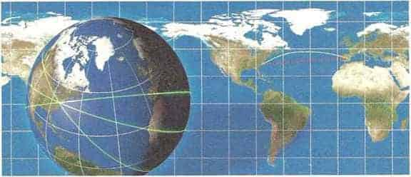

Zaman genleşmesi Hareket eden saatler yavaş çalışıyor gibi görünür. Bu biyolojik saatler için de geçerli olduğundan, hareket eden insanlar daha yavaş yaşlanıyormuş gibi görünür, ancak fazla umutlanmayın, aradaki farkı ölçebilecek normal bir saat yoktur.
Yani Dünya’nın etrafında durmadan doğuya doğru uçarsanız, bu esnada uçakta gösterilecek filmleri tekrar tekrar izlemekten muhtemelen sıkılacak olsanız da, hayat sürenizi uzatabilirsiniz. Ancak bu etki çok küçüktür: Her dönüşte saniyenin 180 milyarda biri kadar (ayrıca çekim gücündeki farklılığın yarattığı etkiler yüzünden bu değer daha da küçülebilir, ama burada o konuya girmemize gerek yok).
Einstein’ın çalışmaları sayesinde fizikçiler anladılar ki, ışık hızı her referans çerçevesinde aynıdır ve Maxwell’in elektrik ve manyetizma kuramına göre zaman üç boyutlu uzaydan ayrı olarak ele alınamaz. Zaman ve uzay birbirine geçmiştir. Bu, her zamanki sol/sağ, ön/arka ve üst/alt yönlerine dördüncü bir gelecek/geçmiş yönü eklemeye benziyor. Fizikçiler uzay ve zamanın bu evliliğine “uzay-zaman” adını verdi ve uzay-zaman dördüncü bir yön içerdiğinden buna dördüncü boyut dediler. Uzay-zamanda zaman, uzayın üç boyutundan ayrı değildir; tıpkı sol/sağ, ön/ arka, üst/alt tanımlarının gözlemcinin yönelimine bağlı olması gibi, zamanın yönü de gözlemcinin hızına bağlı olarak farklılık gösterir. Farklı hızlarda hareket eden gözlemciler, uzay-zaman içinde zaman için farklı yönler seçebilirler. Einstein’ın özel görelilik kuramı bu nedenle, mutlak zaman ve mutlak eylemsizlik (sabit etere göre eylemsizlik) gibi kavramlardan kurtulan yeni bir modeldi.
Einstein çok geçmeden, görelilik ile çekimi uyumlu hale getirmek için başka bir değişikliğin daha gerekli olduğunu fark etti. Newton’ın kütleçekim kuramına göre nesneler herhangi bir zamanda, aralarında o anda bulunan uzaklığa bağlı olarak birbirlerini çekerler. Ancak görelilik kuramı mutlak zaman kavramını ortadan kaldırdığı için, kütleler arası uzaklığın ne zaman ölçülmesi gerektiğini tanımlamanın hiçbir yolu yoktu. Yani Newton’ın kütleçekim kuramı özel görelilik kuramıyla uyumlu değildi ve değiştirilmesi gerekiyordu. Bu uyumsuzluk yalnızca teknik bir zorluk, hatta kuramda bir değişiklik yapılmasını pek gerektirmeden etrafından dolaşılabilecek küçük bir ayrıntı olarak görülebilir. Ancak, bunun hakikatten ne kadar uzak düştüğü ileride görülecekti.
Sonraki on bir yıl boyunca Einstein yeni bir kütleçekim kuramı geliştirdi ve buna da genel görelilik adını verdi. Genel görelilik kuramındaki kütleçekim kavramı Newton’ınkine hiç benzemez. Tersine, uzay-zamanın daha önce düşünüldüğü gibi düz olmadığını, kütle ve enerjisi tarafından bükülüp bozulduğunu öne süren devrimci bir taslağı temel alır.
Bükülmeyi gözümüzde canlandırmanın iyi bir yolu Dünya’nın yüzeyini düşünmektir. Dünya’nın yüzeyi sadece iki boyutlu olmakla birlikte (kuzey/güney ve doğu/batı olarak yalnızca iki yönü vardır) onu örnek olarak kullanacağız çünkü bükülmüş iki boyutlu bir uzayı hayal etmek, bükülmüş dört boyutlu uzayı hayal etmekten daha kolaydır. Dünya’nın yüzeyi gibi eğik uzayın geometrisi, bizim aşina olduğumuz Öklid geometrisinden farklıdır. Örneğin Dünya’nın yüzeyinde iki nokta arasındaki en kısa mesafe - biz bunu Öklid geometrisinde düz çizgi olarak biliriz- iki noktayı birbirine bağlayan, büyük daire adı verilen bir yoldur. (Büyük daire, merkezi Dünya’nın merkezi ile çakışan, Dünya yüzeyindeki bir dairedir. Ekvator büyük daire için bir örnektir, tıpkı ekvatoru farklı ölçülerde döndürerek elde edilecek tüm daireler gibi.)
Diyelim ki, neredeyse aynı enlem üzerindeki iki şehir arasında yolculuk edeceksiniz; örneğin New York’tan Madrid’e gitmek istiyorsunuz. Dünya düz olsaydı en kısa yol dosdoğru doğuya giden yol olurdu ve 3.707 mil kat ettikten sonra Madrid’e varırdınız. Ancak Dünya’nın eğimi yüzünden, düz bir haritada eğik ve dolayısıyla daha uzun görünen, oysa daha kısa olan bir yol vardır. Eğer önce kuzeydoğuya, sonra aşamalı olarak doğuya ve nihayet güneydoğuya uzanan büyük-daire hattını izlerseniz 3.605 mil sonra Madrid’e varırsınız. İki güzergâh arasındaki uzaklık farkı Dünya’nın eğiminden kaynaklanır ve onun Öklid’inkine uymayan geometrisine işaret eder. Havayolu şirketleri bunu bilir ve kullanışlı olduğu durumlarda pilotlarının büyük-daire rotasını izlemelerini sağlar.
Newton’ın hareket yasasına göre gülle, kruvasan ve gezegen gibi cisimler kütleçekim kuvveti gibi bir kuvvet etki etmedikçe düz bir çizgi üzerinde hareket ederler. Ancak Einstein’ın kuramındaki kütleçekim kuvveti diğerleri gibi bir kuvvet değildir; daha ziyade kütlenin uzay-zamanı bükmesiyle yarattığı eğriliğin bir sonucudur. Einstein’ın kuramında nesneler, eğik bir uzayda düz çizgiye en yakın şey olan jeodezikler üzerinde hareket ederler. Düz bir düzlemdeki jeodezikler çizgilerdir, Dünya’nın yüzeyindeki jeodezikler ise büyük dairelerdir. Maddenin yokluğunda dört boyutlu uzay-zaman içindeki jeodezikler, üçboyutlu uzay içindeki düz çizgilere denk düşer. Ancak maddenin varlığı söz konusu olduğunda uzay-zaman değişikliğe uğrayacağından üç boyutlu uzayda cisimlerin yolları, çekim kuvvetiyle açıklanan Newton kuramındaki gibi bükülür. Uzay-zaman düz değilse, nesnelerin yolları eğri görünür, onlara bir kuvvet etki ediyormuş izlenimi verir.
Einstein’ın genel görelilik kuramı, çekim olmadığında özel görelilik kuramım tekrarlar ve tamamen olmasa bile, Newton çekim kuramının Güneş sistemimizin zayıf çekim ortamıyla ilgili öngörüleriyle neredeyse aynı öngörülerde bulunur. Aslında GPS uydu navigasyon sistemlerinde genel görelilik kuramı hesaba katılmasaydı, küresel konumlara ilişkin hesap hataları her gün başına on kilometre kadar artardı! Yine de genel görelilik kuramı-

Jeodezikler Dünyanın yüzeyindeki iki nokta arasındaki en kısa mesafe, düz bir harita üzerinde çizildiğinde eğri olarak görünür. Alkol testine girerseniz aklınızda bulunsun.
nı asıl önemli kılan yeni restoranlar bulmanızı sağlayan cihazlardaki uygulamalar değil, çekim dalgaları ve kara delikler gibi yeni öngörülerde bulunan çok farklı bir evren modeli olmasıdır. Genel görelilik kuramı fiziği geometriye dönüştürmüştür. Modern teknoloji genel görelilik kuramını sınayabildiğimiz pek çok hassas deney yapmamızı olanaklı kılmıştır ve kuram her sınavdan geçmiştir.
Maxwell’in elektromanyetizma kuramı, Einstein’ın genel görelilik kuramı fizikte devrim yapmış olsalar da, Newton fiziği gibi klasik kuramlardır. Yani bu modellerde evrenin tek bir geçmişi vardır. Önceki bölümde gördüğümüz gibi bu modeller atom ve atomaltı düzeylerde gözlemlerle bağdaşmıyor. Bunların yerine, her biri kendi yoğunluğuna veya kendi olasılık genliğine sahip olası her geçmişi içeren bir evren modeli sunan kuantum kuramını kullanmalıyız. Günlük hayatla ilgili pratik hesaplamalar için klasik kuramları kullanmaya devam edebiliriz, ancak atomların veya moleküllerin davranışlarını anlamak istiyorsak Maxwell’in elektromanyetizma kuramının kuantum uyarlamasına ihtiyacımız var; eğer evrenin ilk zamanlarını, bütün madde ve enerjinin küçücük bir hacme sıkışmış olduğu zamanları anlamak istiyorsak genel görelilik kuramının kuantum uyarlamasına ihtiyacımız var. Bu uyarlamalara ihtiyacımız var çünkü bazı yasalar kuantum iken, diğerleri klasik olarak kalsaydı tutarlı bir doğa anlayışına sahip olamazdık. Bu nedenle bütün doğa yasalarının kuantum uyarlamalarını bulmalıyız. Bu türden kuramlara kuantum alan kuramları denir.
Doğanın bilinen kuvvetleri dört sınıfa ayrılır:
1. Kütleçekim kuvveti. Bu dördü arasında en zayıf olandır ama uzun menzilli bir kuvvettir ve çekim kuvveti olarak evrendeki her şeyi etkiler. Büyük cisimlerin çekim kuvvetleri birbirine eklenir ve diğer tüm kuvvetlere hükmedebilir.
2. Elektromanyetizma. Bu da uzun menzilli bir kuvvettir ve çekim kuvvetinden çok daha güçlüdür, ancak sadece elektrik yükü olan parçacıkları etkiler; aynı işareti taşıyan yükler arasında itme, farklı işaretleri taşıyan yükler arasında çekim etkisi yaratır. Yani büyük cisimler arasındaki elektrik kuvvetleri birbirlerini ortadan kaldırır, ama atom ve moleküller düzeyinde hüküm süren onlardır. Elektromanyetik kuvvetler bütün kimyanın ve biyolojinin sorumlusudur.
3. Zayıf Nükleer Kuvvet. Radyoaktiviteye neden olur. Erken evrendeki ve yıldızlardaki elementlerin oluşmasında hayati bir görevi vardır. Ancak günlük yaşamımızda bu kuvvetle karşılaşmayız.
4. Güçlü Nükleer Kuvvet. Atomun çekirdeğindeki protonları ve nötronları bir arada tutar. Ayrıca protonların ve nötronların kendilerini de bir arada tutar; bu önemlidir çünkü proton ve nötronlar da kuark adını verdiğimiz çok daha küçük parçacıklardan oluşmaktadır. Güçlü nükleer kuvvet güneş ve nükleer güç için enerji kaynağıdır, ama zayıf nükleer güçte olduğu gibi onunla da doğrudan bir ilişkimiz yoktur.
Kuantum uyarlaması yapılan ilk kuvvet elektromanyetizma olmuştur. Kuantum elektrodinamiği veya kısaca KED denilen elektromanyetik alanın kuantum kuramı 1940’larda Richard Feynman ve diğerleri tarafından geliştirildi ve bütün kuantum alan kuramlarına model oluşturdu. Belirtmiş olduğumuz gibi klasik kuramlarda kuvvetler alanlar tarafından aktarılırlar. Ancak kuantum alan kuramlarında kuvvet alanları, bozon denilen çeşitli temel parçacıklardan oluşmuştur; bozonlar kuvvet taşır, madde ve parçacık arasında gidip gelerek kuvvetin aktarılmasını sağlarlar. Madde parçacıklarına fermiyonlar denir. Elektronlar ve kuarklar fermiyonlara örnektir. Foton veya ışık parçacığı, bozona örnektir. Elektromanyetik kuvveti ileten bozondur. Bir madde parçacığı (örneğin bir elektron) bir bozon veya kuvvet parçacığı yayar ve geri teper, tıpkı mermisini fırlattıktan sonra geri tepen bir top gibi. Sonra kuvvet parçacığı bir başka madde parçacığı ile çarpışarak soğrulur ve o parçacığın hareketini değiştirir. KED’e göre yüklü parçacıklar -elektromanyetik kuvvetin etkidiği parçacıklar- arasındaki bütün etkileşim, foton değişimi kavramıyla tanımlanır.
KED’in öngörüleri test edilmiş ve deney sonuçlarıyla büyük bir uyumluluk gösterdikleri anlaşılmıştır. Ancak KED’in gerektirdiği matematiksel hesaplamaları yapmak zor olabilir. Ama aşağıda göreceğimiz üzere sorun şudur: Yukarıdaki parçacık değişimi çerçevesine bir kuantum koşulu olarak etkileşimin gerçekleşmesini sağlayan parçacığın bütün geçmişleri içeriyor olmasını da eklediğinizde -örneğin, kuvvet parçacıkları her biçimde takas edilebilir- matematiksel hesaplamalar oldukça karmaşık hale gelir. Bereket versin ki, Feynman alternatif geçmişler kavramını -önceki bölümde anlattığımız kuantum kuramları hakkında düşünme yöntemi- geliştirmenin yanı sıra, farklı geçmişleri açıklamak için çok iyi bir grafik yöntem de geliştirmiştir ve bu yöntem günümüzde sadece KED’e değil, bütün kuantum alan kuramlarına uygulanmaktadır.
Feynman’ın grafik yöntemi, geçmişler toplamı içindeki her kavramı gözümüzde canlandırabilme olanağı sağlar. Feynman diyagramları denilen bu resimler modern fiziğin en önemli araçlarından biridir. KED’de bütün olası geçmişler toplamı, bir Feynman diyagramları toplamı olarak temsil edilebilir; diyagramlar elektromanyetik kuvvet ile birbirinden uzaklaşan iki elektronun gideceği bazı olası yönleri gösterir. Bu diyagramlardaki düz çizgiler elektronları, dalgalı çizgiler fotonları temsil eder. Zamanın aşağıdan yukarıya doğru ilerlediği düşünülür ve çizgilerin birleştiği yerler fotonların çıktığı veya elektron tarafından soğurulduğu noktalara denk gelir. Resimde gördüğünüz (A) diyagramı birbirine yaklaşan, bir foton takas eden ve yollarına devam eden iki elektronu gösterir. İki elektronun elektromanyetik olarak en basit etkileşimi budur, ama biz bütün olası geçmişleri düşünmek zorundayız. Bu nedenle (B) gibi diyagramları da eklememiz gerekir. Bu diyagramda da iki çizgi -iki elektron- birbirine yaklaşır ve iki çizgi birbirinden uzaklaşır, ama elektronlar birbirlerinden uzaklaşmadan önce iki foton takas etmişlerdir.